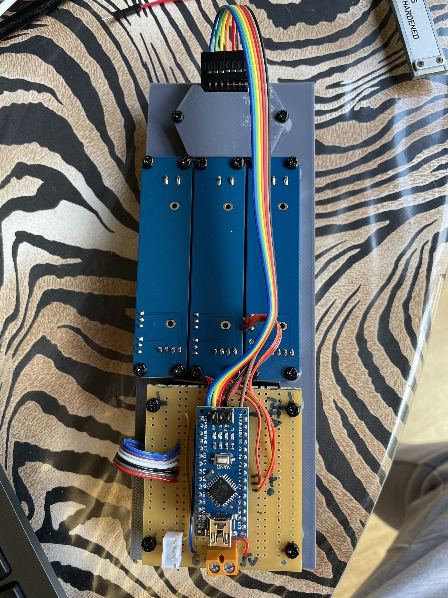
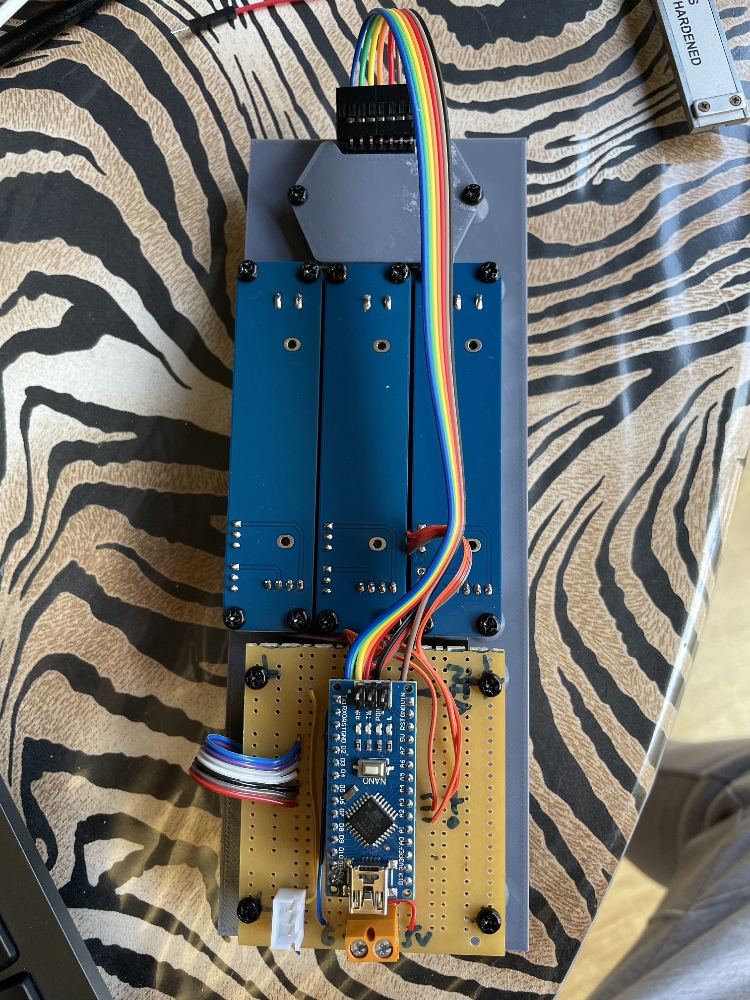
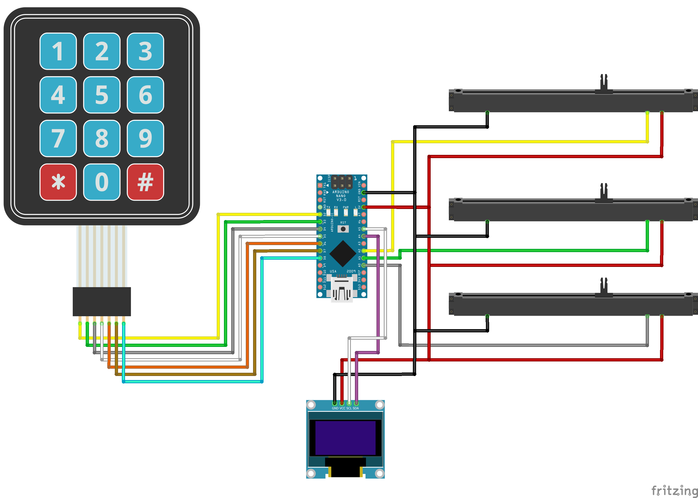

Mimic panel serial throttle
I’ve decided to build a mimic panel for my layout which would need to include a throttle capable of controlling multiple trains concurrently.
After seeing various different throttle projects and ideas shared in the DCC-EX team’s Discord server, and building one of the team’s hand held WiFi/WiThrottle based controllers, I decided to go with some slide potentiometers for throttle control, a standard 4 x 3 keypad for input duties, and a 1.3” SPI OLED display for output, and that it will connect to my EX-CommandStation via serial cable as it will be fixed to the side of my layout.
 

{kind=link}
There is also a quick and dirty video available on YouTube.
Hardware
The brains of the throttle are an Arduino Nano clone, and the software is available in GitHub (see Software).
For the throttle inputs, I’m using Duinotech brand 10K linear slide potentiometers sourced locally here from Jaycar Electronics , however any 10K linear slide or rotary potentiometers will work. In fact, I have also assembled another throttle for my test setup which uses three 10K linear rotary potentiometers to save space.
For the display, I’m also using a Duinotech brand 1.3” 128 x 64 monochrome SPI OLED also sourced from Jaycar Electronics . For my test setup, I’m using a smaller generic 0.96” 128 x 64 I2C OLED display sourced from eBay. Any equivalent SPI or I2C based OLED display with 128 x 64 resolution should suffice.
The 4x3 kepad is also (surprisingly) sourced from Jaycar Electronics. I much prefer the feel of these keypads over the membrane type, however any 4 x 3 keypad should suffice.
This diagram outlines the connections between the devices and Arduino Nano when using an SPI OLED.

This diagram outlines the connections between the devices and Arduino Nano when using an I2C OLED.
{kind=link}
Panel design
The panel was designed using Fusion360 and then printed on my Creality Ender 3V2 printer. I haven’t shared the file in Thingiverse as it’s pretty specific to my application, and will only work with the specific components sourced from Jaycar. I’m more than happy to share if there is interest though.
Software
The software for the throttle is available in my dcc-ex-serial-throttle GitHub repository.
The aim of the software is to use native DCC-EX API integration to control the various aspects of my layout, including concurrent control of three locomotives, and eventuallyl being able to initiate automated routes and close/throw turnouts. Given the throttle will be physically mounted on my mimic panel, operating turnouts and my turntable are very low priorities for the throttle.
Right now, the software is very much a work-in-progress and is extremely limited. The loco addresses are currently hard coded.
The immediate plans I will be implementing when time allows are:
Enable manually entering locomotive addresses via the keypad
Enable reading the roster entries from the DCC-EX EX-CommandStation for selection via the keypad
Throttle usage instructions
(Note as per above that locomotive addresses are currently hardcoded)
The table below outlines the current keypad functions.
Keys listed with an asterisk (*) mean they key needs to be held down for half a second or more, all other key presses are momentary.
Function |
Loco 1 Key |
Loco 2 Key |
Loco 3 Key |
Change direction |
1 |
2 |
3 |
Headlight on/off |
4 |
5 |
6 |
Temporary stop |
7* |
8* |
9* |
Track power on/off |
0 |
0 |
0 |
Emergency stop |
0* |
0* |
0* |